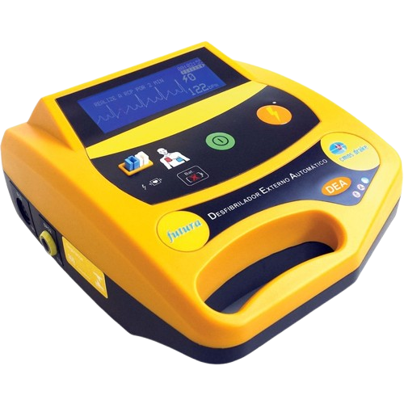

DEA - Desfibrilador Externo Automático
Função do Aparelho
O DEA (Desfibrilador Externo Automático) é utilizado para tratar paradas cardíacas súbitas causadas por arritmias como fibrilação ventricular ou taquicardia ventricular sem pulso. Ele analisa o ritmo cardíaco do paciente e, caso necessário, aplica um choque elétrico para restaurar o ritmo normal do coração.
Ficha Técnica
| Nome do aparelho: | DEA (Desfibrilador Externo Automático) |
| Tensão de operação: | Bateria interna, geralmente 12V a 18V CC |
| Capacitor: | Armazena carga (geralmente de 150 a 360 joules) |
| Tipo de choque: | Monofásico ou bifásico (preferencialmente bifásico) |
| Peso: | Aproximadamente 1,5 a 3,5 kg |
| Tela: | LCD ou LED com instruções de uso |
| Interface: | Botões e comandos de voz para operação |
| Tempo de carga: | 5 a 15 segundos (dependendo do modelo) |
| Alimentação: | Bateria recarregável ou substituível |
| Autoteste: | Automático (diário, semanal, mensal) |
Possíveis Falhas e Soluções
- Bateria descarregada: Substituição ou recarga periódica
- Erro na leitura do ritmo cardíaco: Recolocar os eletrodos corretamente
- Eletrodos ressecados ou vencidos: Trocar os eletrodos por novos
- Erro de software: Enviar para manutenção especializada
- Interferência eletromagnética: Afastar de fontes de interferência
Importância dos Exames Realizados pelo DEA
- Analisa automaticamente o ritmo cardíaco antes de aplicar o choque
- Evita choques desnecessários em ritmos não chocáveis
- Importante no armazenamento de histórico de uso e ECG
- Modelos mais avançados registram os traçados do ECG e dados do evento, que podem ser analisados por médicos posteriormente.
- Fornece informações cruciais para o atendimento pós-evento, como o tempo até o choque e o número de choques aplicados.
Apresentação em Vídeo
Caso o vídeos não esteja disponível clique no botão abaixo